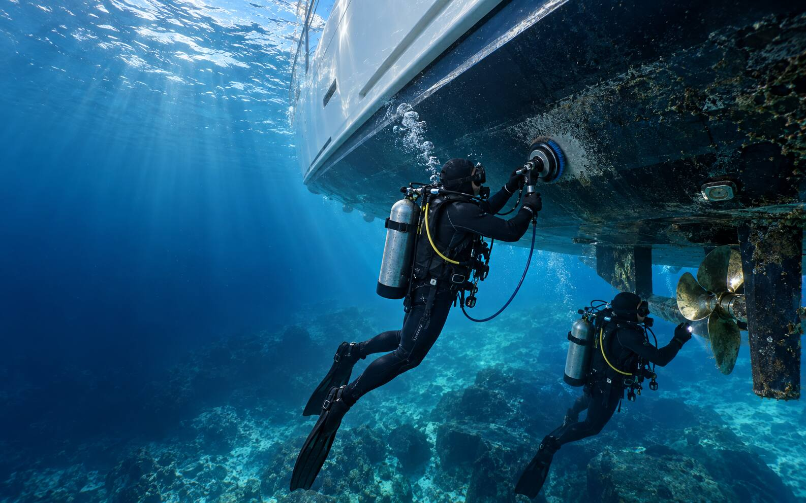

Hull cleaning
Controlled removal of marine growth using tools selected to protect the hull surface and antifouling system.

Commercial divers · Sydney Harbour
Two commercially qualified divers providing safe, precise and environmentally responsible underwater hull cleaning.
What we do
We assess the hull and underwater gear, then choose the right tools and process for the vessel, coating condition and level of marine growth.
Controlled removal of marine growth using tools selected to protect the hull surface and antifouling system.
Careful cleaning around propellers, shafts, rudders, trim tabs, intakes and other underwater fittings.
A methodical visual check of the below-waterline hull and accessible underwater components while we work.
Practical maintenance intervals based on your vessel, location, use and local growth conditions.
Safety, care & compliance
Underwater hull care demands trained people and a disciplined process. Our two-person team brings commercial diving and safety qualifications to every job, with an approach designed to protect your vessel and the surrounding marine environment.
Request a quote
Share the vessel, berth and last known hull clean or antifoul date. We’ll recommend the right underwater service.